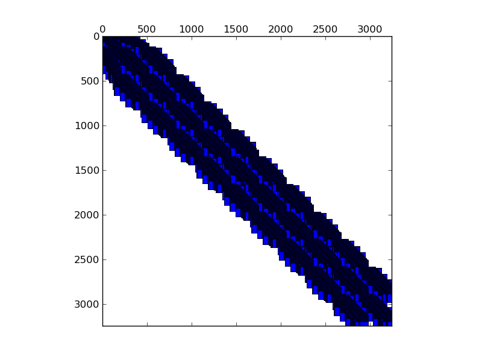

Matrix: raefsky1
Program arguments: ../build/test_spmv_sim ../fpga16-benchmark/fpga16/raefsky1.mtx File: ../fpga16-benchmark/fpga16/raefsky1.mtx Sorting took: took 0.0238412 seconds. Param MatrixPath ../fpga16-benchmark/fpga16/raefsky1.mtx Running on DFE Result Simple Total cycles=14500,14764, Result Simple Padding cycles=11,11, Result Simple Reduction cycles=1621,1621, Config ArchitectureId 0 Result Simple Input width =16, Result Simple Pipes =2, Result Simple Iterations=1, Result Simple Took (ms)=0.744278, Result Simple Est (ms)=0.000145, Result Simple Gflops (est)=4.05898, Result Simple Gflops (actual)=0.000790769, Result Simple BWidth (est)=35.7628, Test passed! All tests passed!

Name, Order, Nonzeros, Unique Values, Sparsity, MC(2), MC(5), MC(8), MC(10) raefsky1 3244 294276 271382 2.79636 0.01598 0.02852 0.03467 0.03989 0.08861